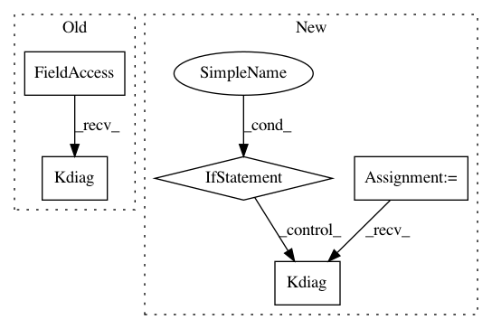

decf9b577dc4e2f95de7641f7a731c8813639edf,GPflow/kernels.py,Prod,Kdiag,#Prod#Any#,280
Before Change
def K(self, X, X2=None):
return self.k1.K(X, X2) * self.k2.K(X, X2)
def Kdiag(self, X):
return self.k1.Kdiag(X) * self.k2.Kdiag(X)
After Change
return reduce(tf.prod, [k.K(X, X2) for k in self.kern_list])
def Kdiag(self, X):
return reduce(tf.prod, [k.Kdiag(X) for k in self.kern_list])
In pattern: SUPERPATTERN
Frequency: 3
Non-data size: 5
Instances
Project Name: GPflow/GPflow
Commit Name: decf9b577dc4e2f95de7641f7a731c8813639edf
Time: 2016-03-03
Author: james.hensman@gmail.com
File Name: GPflow/kernels.py
Class Name: Prod
Method Name: Kdiag
Project Name: GPflow/GPflow
Commit Name: 75b6ddc28f88a22c7508f3bdc6e929e8203c8922
Time: 2016-02-25
Author: james.hensman@gmail.com
File Name: GPflow/kernels.py
Class Name: Add
Method Name: Kdiag
Project Name: SheffieldML/GPy
Commit Name: afba8d5c5e4b8742f5f28af4963bab021810f4fa
Time: 2015-08-28
Author: alan.daniel.saul@gmail.com
File Name: GPy/models/sparse_gp_minibatch.py
Class Name: SparseGPMiniBatch
Method Name: _outer_loop_for_missing_data